✏️ Quiz-4 Solved Problems
PHY-2105 • Electric Field — slide problems, all of Practice Sheet-4, and the graph questions
📌 What's here, and how it maps to your syllabus
| Section | Source | Status in the Quiz-4 notice |
|---|---|---|
| Problems 1–3 from Electric Fields_b.pdf | Syllabus list includes 1 and 3 but skips 2 | |
| 2 | All 32 problems on Practice Problem Sheet-4 | The sheet's list is struck out — but "…similar problem" still applies |
| 3 | Field lines, E-vs-r, ring field, dipole U and τ | N.B. 4: "graph drawings / field graph / field intensity / U field" are included |
About the numbering. The notice lists slide problems 1, 3, 4, 5, 7, 8, 11–25 (21 problems), but the slide deck in this folder contains Problems 1, 2 and 3 only. Exactly as with Quiz-3, the list skips a number the deck does contain — here Problem-2, the charged-arc integration — which fits N.B. 1 excluding derivations. Problems 4–25 come from the lecturer's fuller slide set, which isn't in this folder.
That makes Practice Sheet-4 your best material. Its list is crossed out, but it is the lecturer's own problem set on this exact chapter, and the notice still allows "similar problem". The 19 the lecturer had originally picked are badged Lecturer's pick — do those first.
\( k = 8.99\times10^9 \) N·m²/C², \( e = 1.6\times10^{-19} \) C. Every numerical answer below was computed and checked; several match Halliday's published answers exactly (P5, P7, P13, P14, P15, P21, P22).
Jump to a problem
Pink = one of the lecturer's 19 original picks.
SECTION 1: Slide Problems
Slide Problem-1 — Net field from three charges On the list
Problem: Three particles with charges \( q_1 = +2Q \), \( q_2 = -2Q \) and \( q_3 = -4Q \) are each a distance \( d \) from the origin, at the angles shown (each line makes 30° with the \(x\) axis). What net electric field \( \vec E \) is produced at the origin?
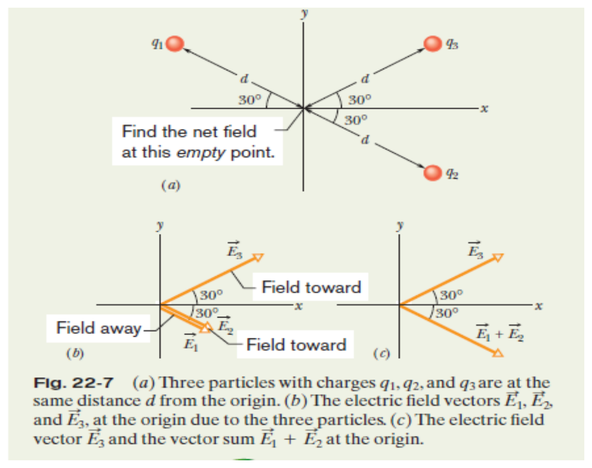
Slide figure (Electric Fields_b.pdf, Fig. 22-7).
📝 Solution
Step 1 — magnitudes. Each charge is a point charge at distance \(d\):
Step 2 — directions (the part people get wrong). Put the tail of each vector at the origin.
- \(q_1\) is positive → \(\vec E_1\) points away from it, i.e. down-right along −30°.
- \(q_2\) is negative → \(\vec E_2\) points toward it — also down-right along −30°.
- \(q_3\) is negative → \(\vec E_3\) points toward it, up-right along +30°.
Step 3 — combine. \(\vec E_1\) and \(\vec E_2\) are parallel, so they simply add:
So we have two vectors of equal size at ±30° to the \(x\) axis. Their \(y\)-parts cancel and their \(x\)-parts add:
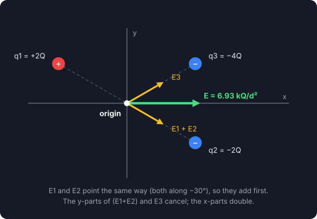
Slide Problem-2 — Field of a charged arc Not on the list
Problem: A plastic rod with uniformly distributed charge \( -Q \) is bent into a 120° circular arc of radius \( r \). The axis of symmetry lies along \(x\) and the origin is at the centre of curvature \(P\). In terms of \(Q\) and \(r\), what is \( \vec E \) at \(P\)?
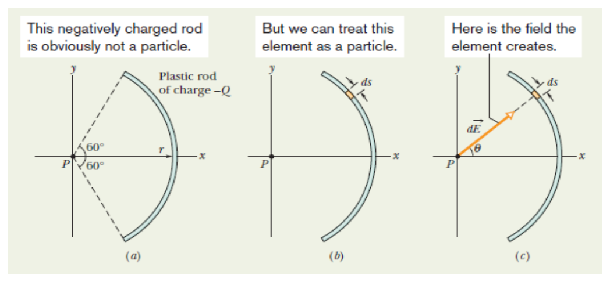
📝 Solution
Treat a small element \(ds\) as a point charge \(dq = \lambda\,ds\), with \( \lambda = Q\big/\tfrac{2\pi r}{3} = \dfrac{3Q}{2\pi r} \). By symmetry the \(y\)-components cancel, so only \(dE\cos\theta\) survives. With \(ds = r\,d\theta\):
Slide Problem-3 — The water molecule as a dipole On the list
Problem: A neutral water molecule (H₂O) in its vapour state has an electric dipole moment of magnitude \( 6.2\times10^{-30} \) C·m. (a) How far apart are the molecule's centres of positive and negative charge? (b) If the molecule is placed in an electric field of \( 1.5\times10^{4} \) N/C, what maximum torque can the field exert on it? (c) How much work must an external agent do to rotate this molecule by 180° in this field, starting from its fully aligned position (\(\theta = 0\))?
📝 Solution
(a) A neutral water molecule has 10 electrons and 10 protons, so \( p = qd = (10e)\,d \):
That is smaller than the radius of a hydrogen atom.
(b) Torque is \( \tau = pE\sin\theta \), largest at \( \theta = 90^\circ \):
(c) Work by an external agent is \( W_a = U_f - U_i \), with \( U = -pE\cos\theta \):
SECTION 2: Practice Problem Sheet-4
How to use this section
Solutions are collapsed so you can try each first. Do the Lecturer's pick problems before the others — those are the 19 the notice originally listed.
P1 — Two charges at the corners of an equilateral triangle Practice
Problem: Two equal charges \( q = 12\times10^{-7} \) C are placed at two corners of an equilateral triangle of side \( r = 10 \) cm. Draw the triangle with charges. Find the resultant electric field and its direction at the third corner.
📝 Show Solution
Each charge is 0.10 m from the third corner:
Both charges are positive, so each field points away from its charge. In an equilateral triangle the two fields make 60° with each other; their components along the base cancel and the perpendicular components add:
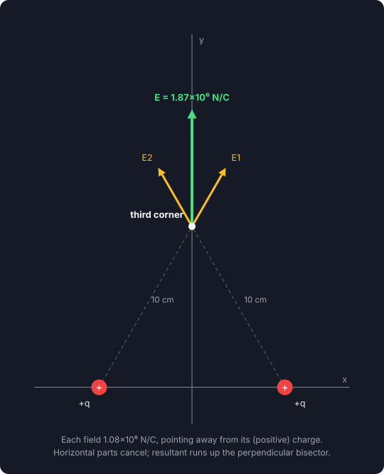
P2 — Where is the field zero? Practice
Problem: Two point charges \( +4q \) and \( +q \) are placed 30 cm apart. At what point on the line joining them is the electric field zero?
📝 Show Solution
Both are positive, so the null point lies between them (only there do the two fields oppose). Let it be \(x\) from \(+4q\):
P3 — Two equal charges, field on the y axis Lecturer's pick
Problem: Two equal charges of \( 10\times10^{-5} \) C are shown in the figure; each produces an electric field at point \(P\) on the \(y\) axis. (i) What is the magnitude of the field of each charge at \(P\)? (ii) What is the direction of each field? (iii) What is the magnitude of the net field at \(P\)? (iv) What is its direction? (v) Find the \(x\) and \(y\) components of the field vectors.

📝 Show Solution
Each charge is at \( (\pm0.10, 0) \) m and \(P\) at \( (0, 0.10) \) m, so \( r^2 = 0.10^2 + 0.10^2 = 0.020 \) m².
(ii) Negative charges → each field points toward its charge, i.e. down-left and down-right, at 45° below the horizontal.
(v) Components (each \( 4.50\times10^7\times\cos45^\circ = 3.18\times10^7 \)):
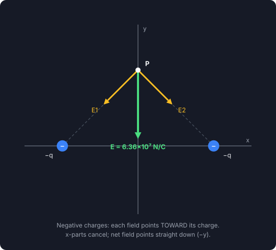
P4 — Finding the charge from the field Lecturer's pick
Problem: A charged particle produces an electric field with a magnitude of 5.0 N/C at a point 60 cm away. What is the magnitude of the particle's charge?
📝 Show Solution
P5 — Four charges on a square — unit-vector answer Lecturer's pick
Problem: The four particles form a square of edge \( a = 5.00 \) cm with \( q_1 = +10.0 \) nC, \( q_2 = -20.0 \) nC, \( q_3 = +20.0 \) nC and \( q_4 = -10.0 \) nC. In unit-vector notation, what net electric field do they produce at the square's centre? What is its direction?
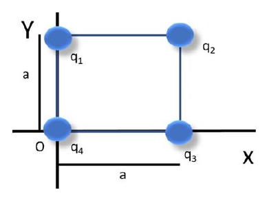
📝 Show Solution
Each charge is \( a/\sqrt2 \) from the centre, so \( r^2 = a^2/2 = 1.25\times10^{-3} \) m² and \( k/r^2 = 7.19\times10^{12} \).
Pair the diagonals. \(q_1\) (+10) and \(q_3\) (+20) share a diagonal and are both positive, so their fields oppose; the stronger one wins by \(10\) nC-worth. Likewise \(q_2\) (−20) and \(q_4\) (−10) oppose, leaving \(10\) nC-worth. Each leftover is
The two leftovers point along the two diagonals — up-left and up-right — at 90° to each other, so their \(x\)-parts cancel and \(y\)-parts add:
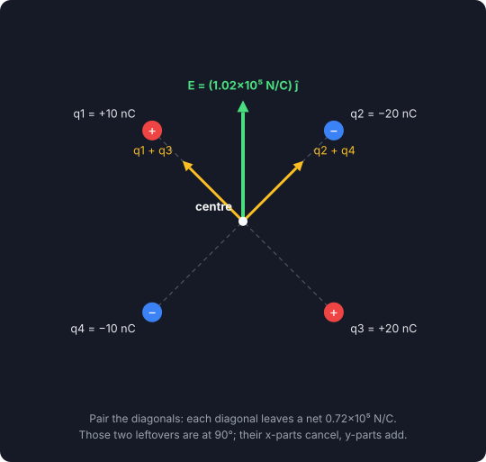
P6 — Four charges on a square — magnitude and direction Practice
Problem: Four charges \(+2q\), \(+4q\), \(+2q\) and \(-2q\) are placed at the corners of a square. (i) Draw the arrangement. (ii) Calculate the magnitude and direction of the field at the intersection of the diagonals, for side 10 cm and \( q = 57\times10^{-9} \) C.
📝 Show Solution
Label consecutive corners A (+2q), B (+4q), C (+2q), D (−2q). Each is \( r = 0.10/\sqrt2 \) from the centre, so \( r^2 = 0.0050 \) m² and \( kq/r^2 = 1.02\times10^{5} \) N/C.
- A and C are both +2q on the same diagonal → equal and opposite → cancel.
- B and D: B (+4q) pushes away from B, D (−2q) pulls toward D. Both therefore point from B toward D and add.
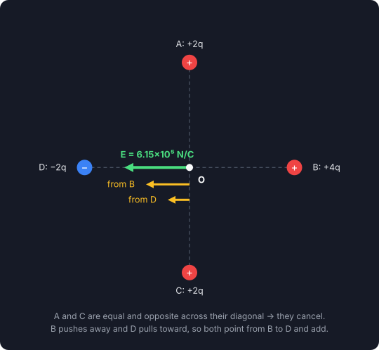
P7 — Two opposite charges, field on the y axis Practice
Problem: \( -q = -4.8\times10^{-19} \) C is at \( x = -3.00 \) m and \( q = 4.80\times10^{-19} \) C is at \( x = +3.00 \) m. What are the (i) magnitude and (ii) direction of the net field at \(P\) on the \(y\) axis at \( y = 4.00 \) m? (iii) If \(-q\) is removed and \(+2q\) is placed at the origin, find the net field again.
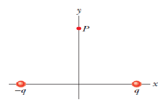
📝 Show Solution
Each charge is \( \sqrt{3^2+4^2} = 5.00 \) m from \(P\):
\(+q\) pushes \(P\) away — along \( (-3, 4)/5 \). \(-q\) pulls toward itself — along \( (-3, -4)/5 \). The \(y\)-parts cancel; the \(x\)-parts add:
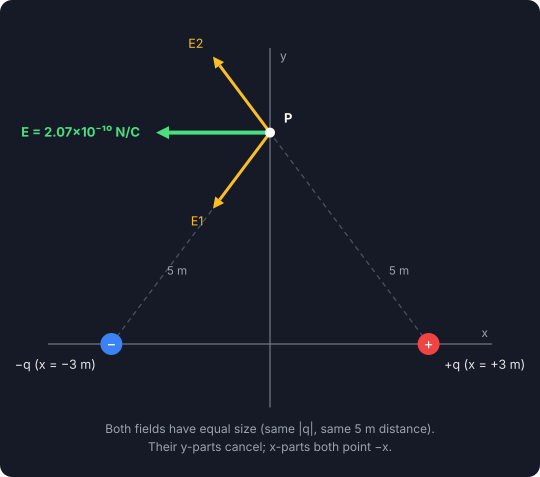
(iii) Now \(+q\) at (3, 0) gives \( 1.73\times10^{-10}(-0.6,\,0.8) \), and \(+2q\) at the origin (4 m below \(P\)) gives \( \dfrac{k(2q)}{16} = 5.39\times10^{-10} \) straight up:
P8 — Field of the proton in a hydrogen atom Practice
Problem: Calculate the electric field due to a proton at the location of the electron in the H atom. The radius of the electron orbit is \( 0.5\times10^{-10} \) m.
📝 Show Solution
P9 — Two charges on the axes, field at the origin Lecturer's pick
Problem: A charge of \( -1.0\ \mu\text{C} \) is at (0, 2) and \( +1.0\ \mu\text{C} \) is at (1, 0) (metres). Draw the arrangement and find at the origin (i) the magnitude and (ii) the direction of \( E \).
📝 Show Solution
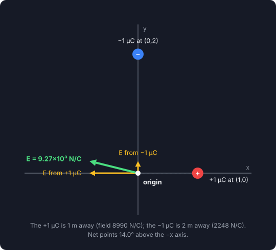
P10 — Dipole: torque and work Practice
Problem: A dipole has charges \(+2e\) and \(-2e\) separated by 0.75 nm in a field of \( 5.4\times10^{-8} \) N/C. (i) Find the torque when the dipole moment is (a) parallel and (b) perpendicular to the field. (ii) How much work is needed to turn it through 180° if it starts at 65°?
📝 Show Solution
(i) \( \tau = pE\sin\theta \): (a) parallel, \( \theta = 0 \) → \( \tau = 0 \). (b) perpendicular:
(ii) From 65° to 245°:
P11 — NaCl dipole Lecturer's pick
Problem: A neutral NaCl molecule has a dipole moment of \( 5\times10^{-32} \) C·m. (i) How far apart are its centres of positive and negative charge? (ii) In a field of \( 2.2\times10^{5} \) N/C, what maximum torque can the field exert? (iii) How much work must an external agent do to rotate it by 170° from the fully aligned position? (iv) What is the maximum potential energy?
📝 Show Solution
P12 — Two positive charges, field off the axis Lecturer's pick
Problem: \( q_1 = +10 \) nC is at the origin and \( q_2 = +15 \) nC at (4, 0). Find at (0, 3) m (i) the magnitude and (ii) the direction of the net field.
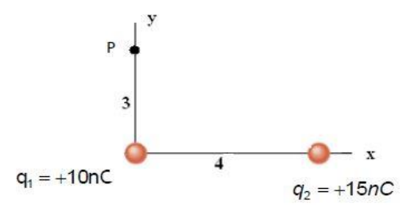
📝 Show Solution
This is a 3-4-5 triangle: \(q_1\) is 3 m below the point, \(q_2\) is 5 m away.
\(E_2\) points away from \(q_2\), along \( (-4, 3)/5 \): components \( (-4.32,\ +3.24) \).
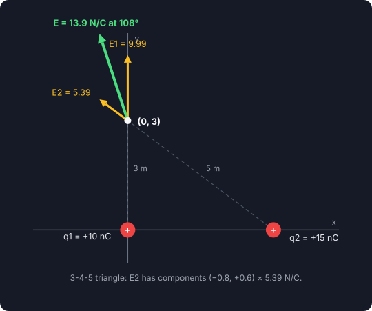
P13 — Three charges, field at P Practice
Problem: The three particles are fixed with \( q_1 = q_2 = +e \) and \( q_3 = +2e \); distance \( a = 6.00\ \mu\text{m} \). What are the (i) magnitude and (ii) direction of the net field at \(P\)?

📝 Show Solution
\(P\) is the midpoint of the line from particle 1 to particle 2, so all three particles are \( a/\sqrt2 \) from \(P\).
- Particles 1 and 2 are equal and on opposite sides of \(P\) along the same line → their fields cancel.
- Only particle 3 is left; its field points away from it at 45°.
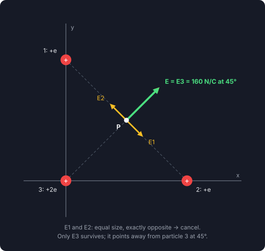
P14 — Dipole in a field — vector form Lecturer's pick
Problem: A dipole with \( \vec p = (3\hat i + 4\hat j)(1.24\times10^{-30}) \) C·m is in a field \( \vec E = (4000\ \text{N/C})\,\hat i \). (i) What is its potential energy? (ii) What torque acts on it? (iii) If an agent turns it until \( \vec p = (-4\hat i + 3\hat j)(1.24\times10^{-30}) \) C·m, how much work does the agent do?
📝 Show Solution
(ii) \( \vec\tau = \vec p\times\vec E \). Only \( p_y\hat j\times E_x\hat i = -p_yE_x\,\hat k \) survives:
P15 — Electrons and protons on an arc Lecturer's pick
Problem: Electrons (e) and protons (p) sit on a circular arc of radius \( r = 2.00 \) cm with \( \theta_1 = 30^\circ \), \( \theta_2 = 50^\circ \), \( \theta_3 = 30^\circ \), \( \theta_4 = 20^\circ \). What are the (i) magnitude and (ii) direction (relative to \(+x\)) of the net field at the centre?

📝 Show Solution
Reading the angles off the figure, the charges sit at (from \(+x\)): e at 0°, p at 30°, p at 80°, e at 130°, p at 160°. Every charge is \(r\) from the centre, so each field has the same size:
A proton at angle \(\phi\) gives a field pointing away, along \( \phi + 180^\circ \); an electron gives a field toward it, along \(\phi\). Summing the unit vectors:
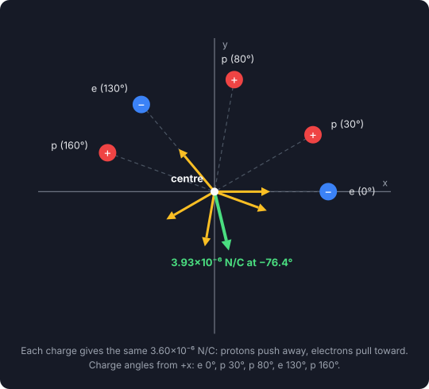
P16 — Right triangles — like vs unlike charges Practice
Problem: PAD and PBD are right-angled triangles (PD = 3, AD = DB = 4, PA = PB = 5). What is the field at \(P\) on the \(y\) axis for (i) Figure-1 (+15 nC at A and B) and (ii) Figure-2 (−15 nC at A, +15 nC at B)?
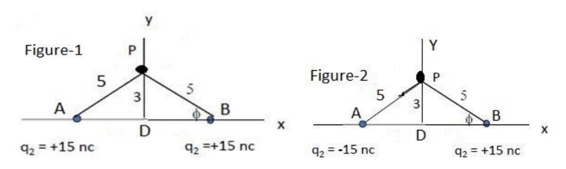
📝 Show Solution
(i) Like charges: both push away. Their \(x\)-parts (±0.8) cancel; \(y\)-parts (0.6) add:
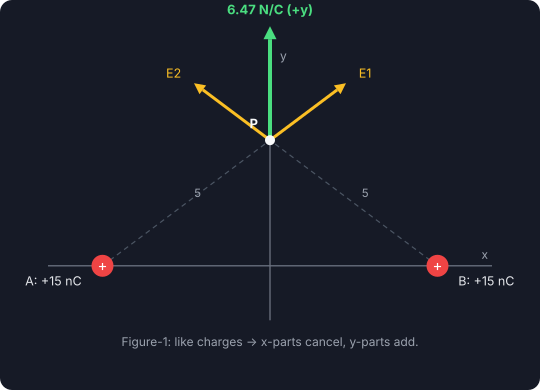
(ii) Unlike charges: A now pulls toward itself. Now the \(y\)-parts cancel and the \(x\)-parts add, both toward A:
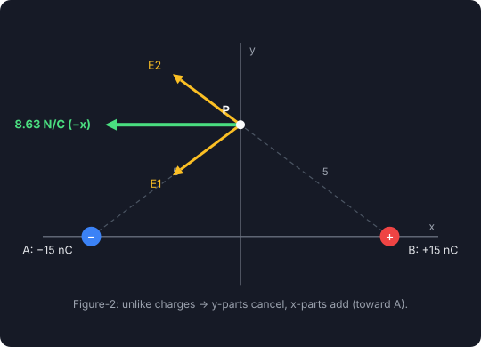
P17 — Electron moving along the field Lecturer's pick
Problem: An electron enters a uniform field \( E = 50 \) N/C with initial velocity 40 km/s in the same direction as the field. (i) What is its speed 1.5 ns later? (ii) How far does it travel in that time?
📝 Show Solution
The force on an electron is opposite to \(\vec E\), so it decelerates:
P18 — Electron deflected by a field Lecturer's pick
Problem: An electron is projected horizontally at \( v = 10^6 \) m/s, perpendicular to a downward field \( E = 2000 \) N/C. How far is it deflected after travelling 1 cm? (\( m_e = 9.1\times10^{-31} \) kg)
📝 Show Solution
Horizontally there's no force, so the time to cover 1 cm is \( t = x/v \). Vertically the electron is pushed up (opposite to \(\vec E\)):
P19 — Charged ring, seen from far away Lecturer's pick
Problem: An electron on the \(y\) axis is 25 nm from the centre of a charged ring of radius 1 nm. What are the field and the electrostatic force on the electron, given that it is far from the ring?
📝 Show Solution
Check the approximation: \( z^2 + R^2 = 625 + 1 \) nm², so ignoring \(R\) changes the answer by only about 0.2%.
P20 — Two charges above the origin Lecturer's pick
Problem: From the figure (\( q_1 = 3.2\times10^{-19} \) C and \( q_2 = 5.6\times10^{-19} \) C, each 0.005 m from O at 30° above the \(x\) axis), calculate (i) the magnitude and (ii) the direction of the net field at O with \( q_0 = 0 \).
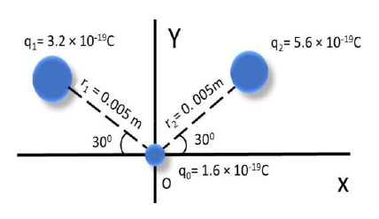
📝 Show Solution
Both positive, so the fields point away: \(E_1\) down-right, \(E_2\) down-left, each 30° below the horizontal.
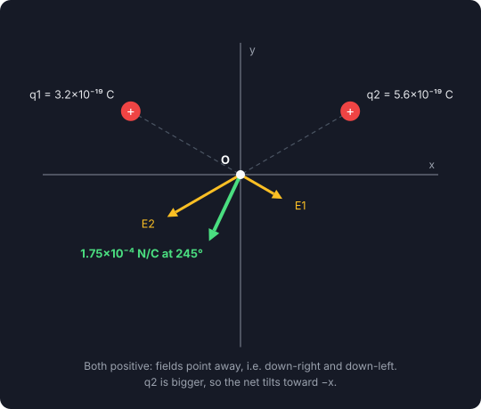
P21 — Charged cloud: field, force, and gravity Lecturer's pick
Problem: A particle of charge \( -2.0\times10^{-9} \) C feels a downward force of \( 3.0\times10^{-6} \) N. (i) What is \(E\)? For a proton in this field, what are the (ii) magnitude and (iii) direction of the electric force, (iv) the gravitational force, and (v) the ratio \(F_{el}/F_g\)?
📝 Show Solution
The particle is negative and pushed down, so \(\vec E\) points up.
P22 — Dipole swinging in a field Practice
Problem: A water-molecule dipole (\( d = 1.2 \) fm, \( p = 1.60\times10^{-27} \) C·m) swings from \( \theta_i = 20^\circ \) to \( \theta_f = 20^\circ \) as shown, in a field of \( 3\times10^{6} \) N/C. (i) What is the change in its potential energy? (ii) What is the electric field if the path length equals the dipole distance?
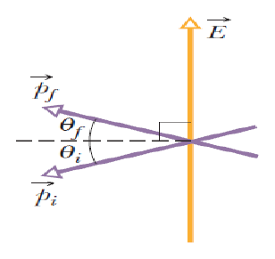
📝 Show Solution
(i) The angles are measured from the horizontal, but \(U\) needs the angle to \(\vec E\), which is vertical. So the dipole goes from \( 90^\circ + 20^\circ = 110^\circ \) to \( 90^\circ - 20^\circ = 70^\circ \):
P23 — Fair-weather field from the ionosphere Lecturer's pick
Problem: The ionosphere is 100 km up and at \( 3\times10^{6} \) V. What electric field produces this?
📝 Show Solution
P24 — Same triangle, field at particle 3 Lecturer's pick
Problem: Using the P13 arrangement with \( q_1 = q_2 = 5 \) nC, \( a = 5 \) nm and \( q_3 = 0 \): what are the (i) magnitude and (ii) direction of the net field at point 3?
📝 Show Solution
Point 3 is the right-angle corner. \(q_1\) is directly above it and \(q_2\) directly to its right, each \(a\) away:
Both positive: \(E_1\) points down (\(-y\)), \(E_2\) points left (\(-x\)). They are perpendicular:
P25 — Symmetric protons and electrons Lecturer's pick
Problem: From the figure, calculate the net field needed to bring a \( +2.2\ \mu\text{C} \) charge to the centre. The electrons are 0.1 cm from the centre, the protons 0.6 cm.

📝 Show Solution
The four protons sit in two opposite pairs at equal distances, and so do the four electrons. Each opposite pair gives equal and opposite fields at the centre, so everything cancels:
P26 — Reading field lines Lecturer's pick
Problem: The field lines on the left have twice the separation of those on the right. (i) If the field at A is 40 N/C, what is the force on a proton at A? (ii) What is the field at B?
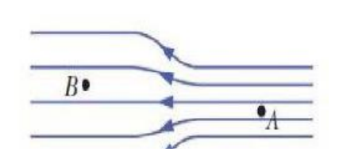
📝 Show Solution
(ii) Field strength is proportional to line density. On the left the lines are twice as far apart, so the density — and the field — is half:
P27 — Two positive charges on the x axis Lecturer's pick
Problem: \( q_1 = +7\ \mu\text{C} \) is at \( x = -0.5 \) m and \( q_2 = 2q_1 = +14\ \mu\text{C} \) at \( x = +0.5 \) m. What are the magnitude and direction of the net force at the origin?
📝 Show Solution
P28 — Four equal charges on a square Lecturer's pick
Problem: Four equal charges \(q\) are at the corners of a square. What is the field at the centre?
📝 Show Solution
Opposite corners are equidistant from the centre and carry the same charge, so each pair's fields are equal and opposite.
P29 — Unequal charges on a square Practice
Problem: What are the magnitude and direction of the net field at the centre of the square below (side \(L\); \(+q\) and \(-2q\) on top, \(-q\) and \(+2q\) on the bottom)?
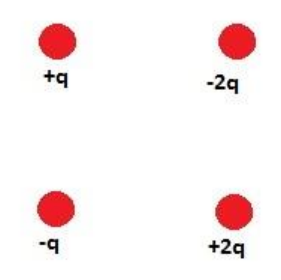
📝 Show Solution
Each corner is \( L/\sqrt2 \) from the centre, so a charge \(q\) gives \( kq/(L^2/2) = 2kq/L^2 \).
Each diagonal joins like charges (+q with +2q; −q with −2q), so on each diagonal the fields oppose and leave \( 2kq/L^2 \):
- +q / +2q diagonal → leftover points away from the +2q corner (up-left)
- −q / −2q diagonal → leftover points toward the −2q corner (up-right)
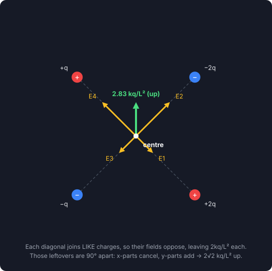
P30 — Force, and the field midway Practice
Problem: A 20 μC charge is 20 cm from a 60 μC charge. (i) Find the force between them. (ii) Find \(E\) midway between them. (iii) What force acts on an electron placed midway?
📝 Show Solution
(ii) Each is 0.10 m from the midpoint. The fields point away from each charge, so they oppose:
P31 — Three corners of a square, field at the fourth Practice
Problem: Point charges \( 4\times10^{-6} \), \( 8\times10^{-6} \) and \( 12\times10^{-6} \) C sit at three consecutive corners of a 10 cm square. Find the net field at the fourth corner.
📝 Show Solution
Put the fourth corner at the origin, the 4 μC charge at (0.1, 0), the 8 μC at (0.1, 0.1) and the 12 μC at (0, 0.1). All are positive, so every field points away from the square.
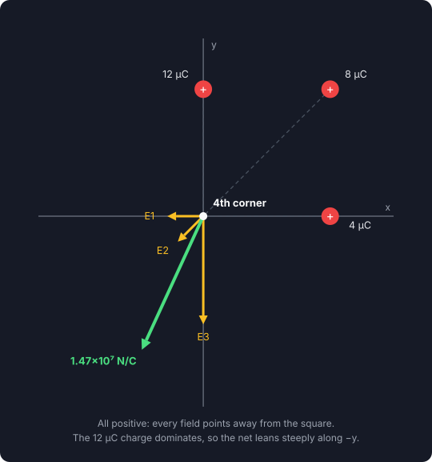
P32 — Three charges at 60° — answer in k, Q, d Practice
Problem: \( q_1 = 2Q \), \( q_2 = -2Q \) and \( q_3 = 4Q \) are each a distance \(d\) from point A at the origin, arranged as shown. Find the field at A in terms of \(k\), \(Q\) and \(d\).
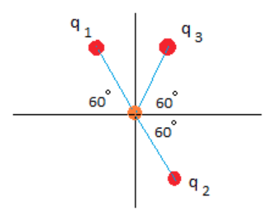
📝 Show Solution
This is slide Problem-1 again, rotated. Directions at A:
- \(q_1\) (+2Q, upper-left at 120°) → away → along 300°
- \(q_2\) (−2Q, lower-right at 300°) → toward → along 300°
- \(q_3\) (+4Q, upper-right at 60°) → away → along 240°
Two equal vectors 60° apart → resultant along the bisector, 270° (straight down):
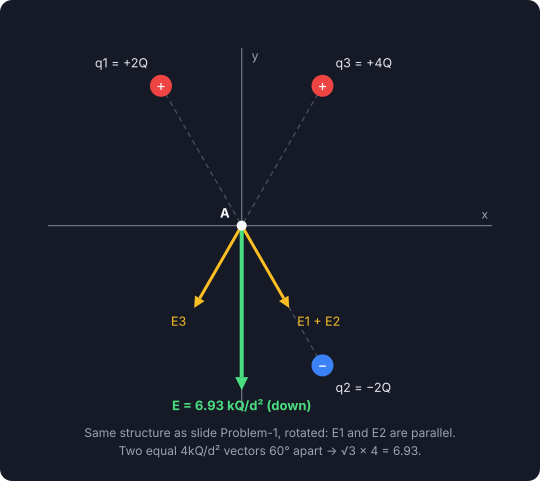
SECTION 3: Graph Questions (N.B. 4)
Why this section exists
N.B. 4 of the notice says "different types of graph drawings / field graph / field intensity / U field / graphical analysis" are included. These are the graphs this chapter can ask for. Every one below is plotted from the actual formula — the field-line pictures are traced numerically from Coulomb's law, not sketched.
G1 — Field-line diagrams Graph
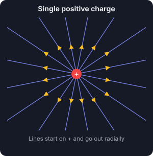
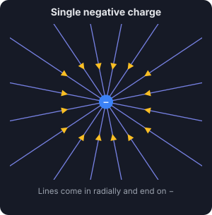
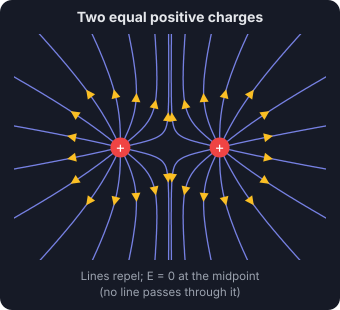
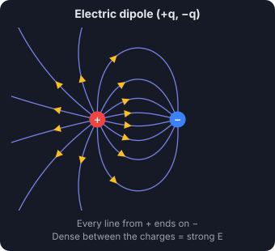
Rules the marker checks:
- Lines start on positive charges and end on negative ones (or go off to infinity).
- The tangent to a line gives the direction of \( \vec E \); put arrowheads on every line.
- Line density ∝ field strength — crowd them where \(E\) is strong (near charges, between a dipole's charges).
- Lines never cross (the field has only one direction at any point).
- Draw a number of lines proportional to the charge: a \(2q\) charge gets twice as many lines as \(q\).
Two like charges: the lines bend away from each other and none passes through the midpoint, where \( E = 0 \).
G2 — Field intensity vs distance Graph
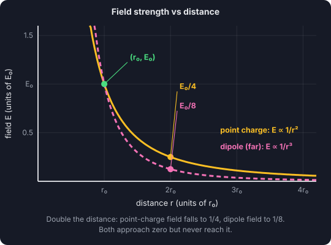
For a point charge \( E = kq/r^2 \); far from a dipole \( E = p/(2\pi\varepsilon_0 r^3) \). Mark a pair of points to show the law: doubling \(r\) quarters a point charge's field but cuts a dipole's to one-eighth. Keep the curve asymptotic to both axes — it never touches either.
G3 — Field on the axis of a charged ring Graph
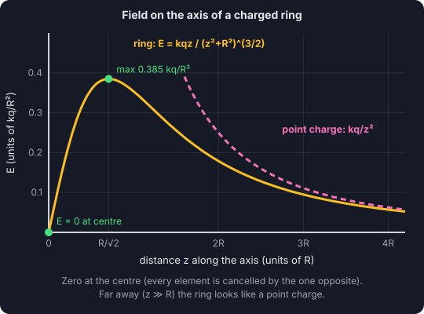
\( E = \dfrac{kqz}{(z^2+R^2)^{3/2}} \). Three features to show: zero at the centre (every element is cancelled by the one opposite), a maximum at \( z = R/\sqrt2 \), and a tail that merges with \( kq/z^2 \) far away, where the ring looks like a point charge.
G4 — Dipole potential energy and torque vs angle ("U field") Graph
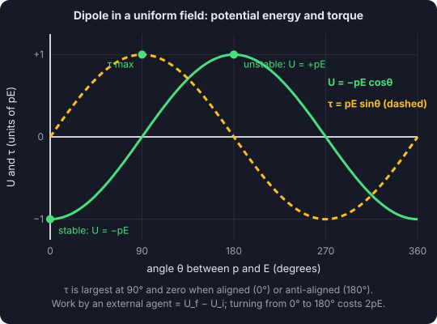
\( U = -pE\cos\theta \) is a minimum of \(-pE\) at 0° (stable, aligned) and a maximum of \(+pE\) at 180° (unstable). \( \tau = pE\sin\theta \) peaks at 90° and is zero at both equilibria. The work to turn a dipole from \(\theta_i\) to \(\theta_f\) is read straight off the \(U\) curve: \( W_a = U_f - U_i \).
⚡ The mistakes that cost the most marks in this chapter
- Direction of \(\vec E\) from a negative charge — it points toward the charge. Draw every arrow before calculating.
- Adding magnitudes at an angle. Resolve into \(x\) and \(y\), add, then \( \sqrt{E_x^2+E_y^2} \).
- Missing the symmetry. Equal charges at equal distances on opposite sides cancel — P13, P25, P28 need almost no arithmetic.
- Force on an electron is opposite to \(\vec E\). P17, P21, P30.
- Dipole angle is measured from \(\vec E\), not from the horizontal — P22.
- \(W_a = U_f - U_i\) for an external agent; the field itself does \(W = -\Delta U\).